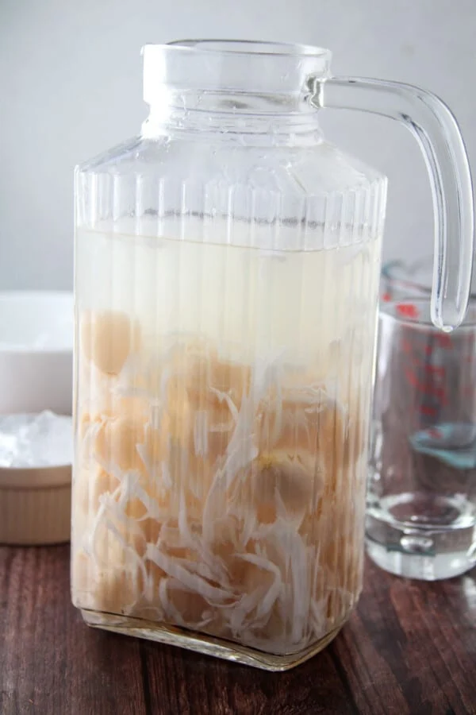
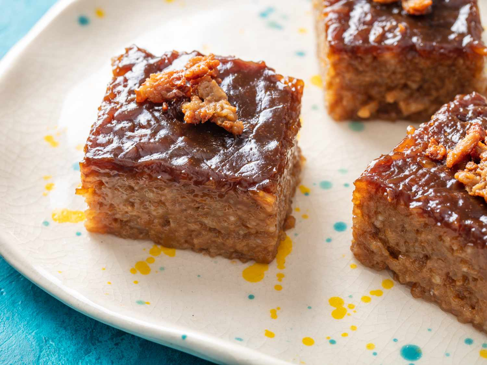
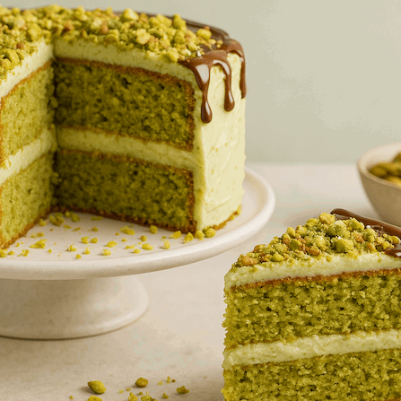

BUKOLYCHEE
View
Ingredients
- 2 cups young coconut meat (buko), shredded
- 4 cups coconut juice
- 1 can (20 ounce) lychee in syrup, drained
- 2/3 sugar
Procedure
- In a large pitcher, young coconut, coconut juice, lychee (including syrup), and sugar. Stir well until sugar is dissolved.
- Chill in the refrigerator until ready to serve.
- Serve in tall glasses over ice.
SAGO'T GULAMAN
View
Ingredients
- cooked sago, gulaman (cut into small cubes)
- arnibal syrup
- 4 cups cold water
- 1 tps banana essence or vanilla extract
- crushed ice
Procedure
- In a pot over medium heat, bring enough water to cover sago pearls to a boil. Add sago pearls, stir gently and cook for about 10 minutes or until translucent. Remove from heat, rinse well and drain.
- In the pot, add boiled sago and enough cold water to cover. Cook over medium heat, stirring occasionally, and bring to a gentle boil. When water has boiled for about 5 minutes, remove from heat, rinse well and drain.
- In the pot, add enough cold water to cover sago and again, bring to a gentle boil for about 5 minutes. Remove from heat, rinse well and drain. Repeat the process until sago pearls are tender but chewy and translucent with no white in the center. Rinse well and allow to cool.
DESSERTS

BIKO
View
Ingredients
- 2 cups glutinous rice aka sticky rice or malagkit
- 1 1/2 cups water
- 2 cups brown sugar
- 4 cups coconut milk
- 1/2 tsp salt
Procedure
- Combine the sticky rice and water in a rice cooker and cook until the rice is ready (we intentionally combined lesser amount of water than the usual so that the rice will not be fully cooked)
- While the rice is cooking, combine the coconut milk with brown sugar and salt in a separate pot and cook in low heat until the texture becomes thick. Stir constantly.
- Once the rice is cooked and the coconut milk-sugar mixture is thick enough, add the cooked rice in the coconut milk and sugar mixture then mix well. Continue cooking until all the liquid evaporates (but do not overcook).
- Scoop the cooked biko and place it in a serving plate then flatten the surface.
- Share and Enjoy!

Pistachio
For the sponge cake
View
Ingredients
- 1/2 cup (90grams) unsalted shelled roasted pistachios
- 1 1/2 (180g) all purpose flour
- 1 1/2 teaspoon baking powder
- 1 1/2 teaspoon kosher salt
- 1 teaspoon cardamom
- 1/2 (120ml) cup whole milk, at room temperature
- 1 1/4 cup sugar (250g), devided
- 6 large eggs, seperated, at room temperature
- 1/2 teaspoon almond extract
- 1/2 teaspoon vanilla extract
For the milk mixture
- 1 can (14 ounces) condensed milk
- 1 can (12 ounces) evaporated milk
- 1/2 cup (120ml) whole milk
- 1/4 teaspoon ground cinnamon
- 1/2 teaspoon ground cardamom
For the toppings
- 1 1/2 cup heavy cream, chilled
- 3 tablespoon powdered sugar
- 1/2 cup unsalted shelled roasted pistachios
Procedure
- Separate the egg whites and egg yolks in clean separate bowls. To prevent a yolk from accidentally breaking into the whites, separate the whites into a separate small bowl each time and then transfer it to the one you will beat them in. Make sure the bowl you add the egg whites in is very clean and has no grease marks.
- Add 7 tablespoon of the sugar into a bowl and the zest and rub it together for a few minutes. Add into the yolks and whisk well until pale and light. Whisk in the milk. Then add in the flour, ground pistachios, salt and baking powder. Fold that gently until all mixed together
- Now beat the egg whites in the separate bowl, until soft peaks form. Gradually add in 3.5 tablespoon sugar while beating and continue until you get stiff peaks
- Add that into the flour mixture and fold gently with a spatula by scraping from the sides of the bowl, inwards. Don’t mix too much so you don’t deflate them.
- In a 8x8 pan, with ONLY the bottom lined with parchment paper, pour the batter and bake at 350F for about 40-45 minutes. Don’t open the oven door until the last 10 minutes. Gently poke the cake with your finger and if it springs back, it’s done. If it leaves an indent, then bake for another 5 ish minutes